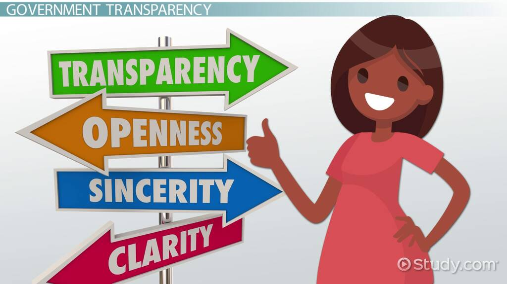

Innovative Solutions for a Smarter City
Future City leverages cutting-edge technology to enhance urban living through seamless digital integration.
Our city is equipped with smart infrastructure that includes intelligent traffic management, energy-efficient lighting, and responsive public services.
Residents enjoy a wide range of digital services such as online health consultations, virtual learning environments, and automated public utilities management.
Our digital platforms facilitate active citizen engagement through e-governance portals, real-time feedback systems, and community forums.
Our governance model emphasizes transparency and accountability. Citizens can access information on public spending, city planning, and more through our open data portals.
We prioritize the security and privacy of our residents' data. Advanced cybersecurity measures are in place to protect against threats and ensure data integrity.
Our digital governance framework streamlines public services, making processes such as licensing, permits, and registrations faster and more efficient.